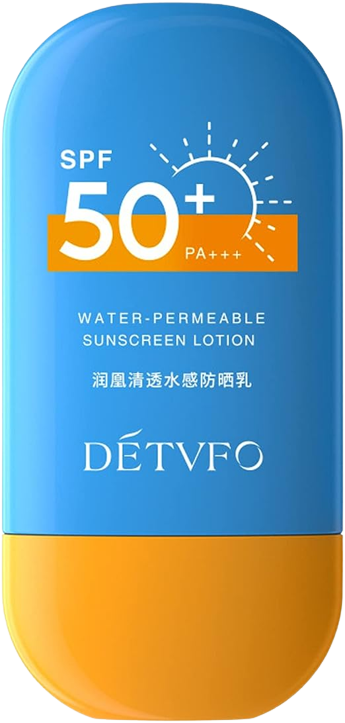
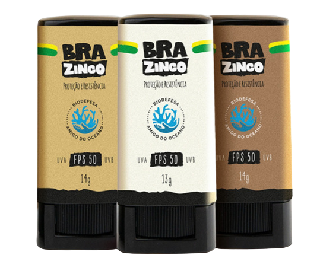

Como a pele reage ao sol
Desvendando o protetor solar
Essa categoria é muito sensível, ela nunca consegue ficar com uma cor bronzeada diante do sol, geralmente fica vermelha ao extremo e com a pele ardendo e muitas vezes sensível ao toque. Esse tipo de pele é encontrado em pessoas com sardas, cabelos ruivos, olhos azuis e verdes. Pessoas com esse fototipo de pele são mais propensos a ter problemas como o câncer de pele, pois são muito sensíveis. Elas precisam usar fator de proteção solar com no mínimo fator 50 para se proteger, é necessário evitar a exposição direta e usar chapéus e outras barreiras. Os protetores com esse alto nível de proteção levam na composição óxido de zinco e dióxido de titânio.

